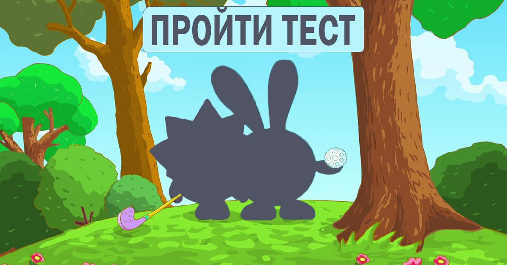
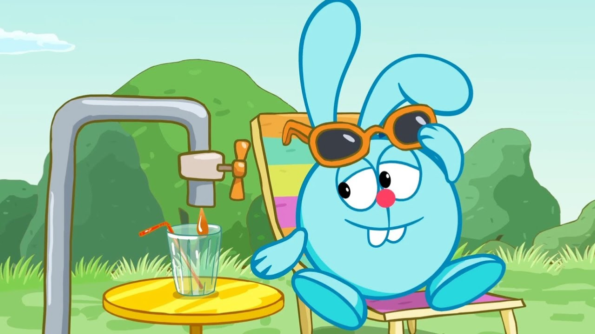
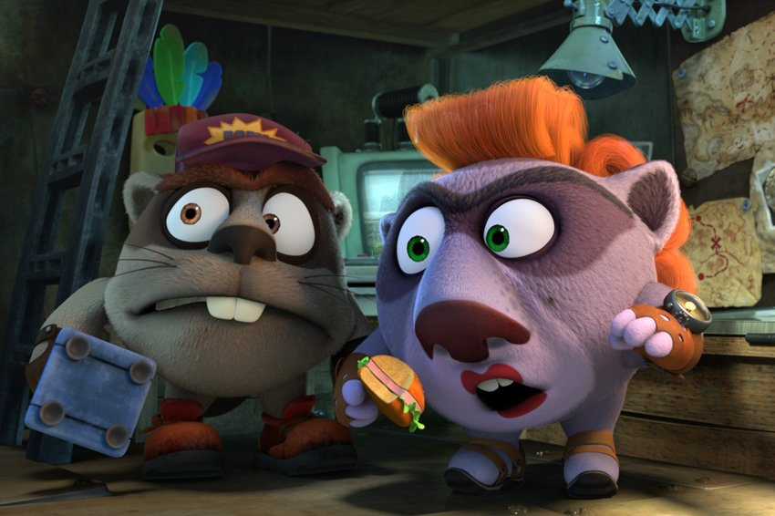

кто изображен на картинке
крош
пин
копатыч
кто изображен на картинке
дора
совунья
нюша
кто изображен на картинке
хрум
огонек
драко
дата премьеры
12 октября 2012г.
2 января 2010г.
22 декабря 2011г.

кто изображен на картинке
дизель и лара
шустряк и лада
бумер и киша
какая песня звучала в серии про вестибулярный аппарат